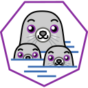
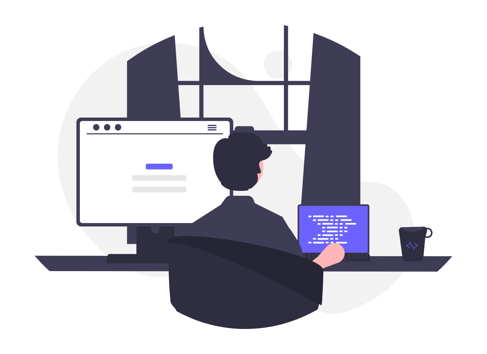

Outils & technologies
PHP

PodmanPassionné par le réseau, la programmation et plus largement les nouvelles technologies,
j’aime concevoir des projets concrets et développer sans cesse mes compétences techniques.

Je m'appelle Alban Sonneville, actuellement en deuxième année de BUT Informatique à l’Université de Lille. Curieux et passionné par les nouvelles technologies, j’aime explorer les domaines du réseau et de la programmation. Ce qui me motive avant tout, c’est de concevoir des projets concrets, d’expérimenter et d’apprendre en donnant vie à mes idées.
Le BUT Informatique est pour moi une formation très enrichissante, qui m’apporte des bases solides en développement, administration système et gestion de projets. Grâce à cet équilibre entre théorie et pratique, j’acquiers une vision globale du monde informatique, tout en développant des compétences techniques polyvalentes.

PodmanJeu de cartes au tour par tour affiché dans le terminal.
Les attaques reposent sur des QCM adaptés au niveau scolaire du joueur, afin de garder un équilibre entre apprentissage et gameplay.

Site web fictif pour une entreprise, permettant aux employés de partager des trajets. Incluant une page d'accueil, une page de recherche de trajets, une page de connexion et une page d'aide avec un formulaire.

Application JavaFX permettant d'importer des adolescents depuis un fichier CSV, de gérer les rôles hôte/visiteur et de former des paires selon un score d'affinité.

Base de données permettant la génération d’états (ou listes) pour afficher des informations telles que les factures, les contrats des salariés, la liste des interventions, etc. Elle permet également de remplir des formulaires pour consulter les informations relatives à divers éléments (clients, aides-soignants, matériel, etc.).
Site de covoiturage fictif pour l'entreprise AMD, permettant aux employés de partager des trajets. Incluant une page d'accueil, une page de recherche de trajets, une page de connexion et une page d'aide avec un formulaire.